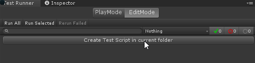
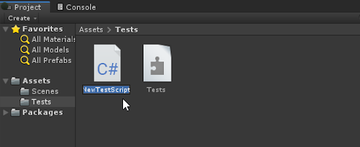
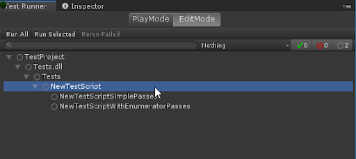
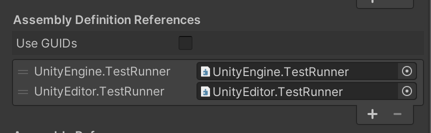

Workflow: How to create a test¶
To create a test, do the following:
Create your Test assembly folder and select it in the Project window.
Click the button Create Test Script in current folder option in the Test Runner window. 
It creates a NewTestScript.cs file in the Tests folder. Change the name of the script, if necessary, and press Enter to accept it.

Now you’ll see two sample tests in the Test Runner window:

Now you can open the tests in your favorite script editor.
You can also create test scripts by navigating to Assets > Create > Testing > C# Test Script, unless adding a test script would result in a compilation error.
Note: Unity does not include
TestAssemblies(NUnit, Unity Test Framework, and user script assemblies) when using the normal build pipeline, but does include them when using Run on <Platform> in the Test Runner window.
Create additional tests¶
To create another set of tests:
In the Project window, select Assets.
Create a new test assembly folder (menu: Assets > Create> Testing > Tests Assembly Folder).
In the Project window, select the new folder.
Create a new test script in the folder (menu: Assets > Create > Testing > C# Test Script).
The assembly definition is assigned the same name as your new asset. To rename it, change the Name in the Insepctor window. Assembly definition names must be unique.
Note: Changing the file name of the assembly definition file does not affect the value of the Name property in the file. Use the Inspector window to make sure the name is properly changed.
By default Any Platform is preselected as the target platform for the new assembly, which means the test script appears as a PlayMode test in the TestRunner window. To change it to an EditMode test, in the Inspector window select Editor only under Platforms.
New assemblies created through the Assets menu should automatically include references to UnityEngine.TestRunner and UnityEditor.TestRunner. If these references are missing, add them in the Inspector window under Assembly Definition References:

Filters¶
If you have a lot of tests, and you only want to view/run a sub-set of them, you can filter them in three ways (see image above):
Type in the search box in the top left
Click a test class or fixture (such as NewTestScript in the image above)
Click one of the test result icon buttons in the top right
For more information, see Edit Mode vs. Play Mode tests.